Edición de Audio y video
F. Linea de Tiempo
Este es uno de los menús más importante para la edición del video.
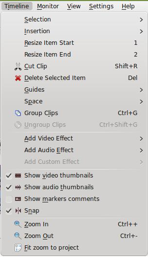
La línea del tiempo es el lugar de trabajo para edición de video que realizamos. Este menú nos permite:
- seleccionar: desde un clip hasta una transición;
- Para marcar una selección te recomiendo utilizar la línea de tiempo y el monitor del proyecto. Las zonas verdes (1) te indican la zona seleccionada. Para realizar la selección utiliza los corchetes (2) para indicar el inicio y el final.
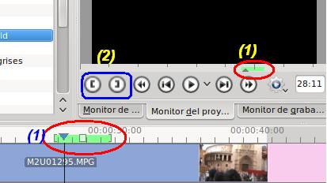
- Insertar: un clip, sobreescribiendo la parte del actual;
- Cortar un clip: Esta opción nos permite dividir un clip en varias partes. Es muy válido para elaborar transacciones o para eliminar partes de un clip determinado.
- Te recomiendo utilizar la herramienta cortar de la línea de tiempo.
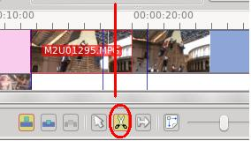
- Eliminar el objeto seleccionado: El clip que tengas seleccionado en el árbol del proyecto.
- Guías: añadir, eliminar y editar las guías que personalizemos. Esto nos puede servir para marcar ciertas zonas de la línea de tiempo para realizar, a posterior, edición sobre nuestra línea de tiempo. (Ejemplo: marcamos los segundos donde aparece una persona para titular su nombre).
- Observa en la imagen que hemos generado tres guías (la última la denominamos saludo) y se muestra una línea delgada de color azul claro en la línea de tiempo.
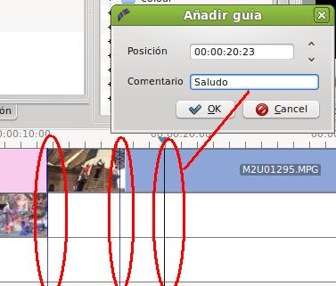
- Espacio: añadir o eliminar espacios en los clips. Es decir, introducir zonas blancas o vacías.
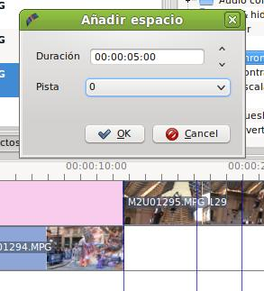
- Una vez realizado el añadir espacio, en nuestra pista 0, nuestra línea de tiempo quedará de la siguiente forma.
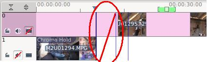
- Agrupar Clips: permite en la zona del árbol de proyectos seleccionar dos clips o más y agruparlos para formar uno sólo.
- Efectos:
- Permite añadir diversos efectos a una zona seleccionada del clip, tanto para la imagen como para el sonido.
- 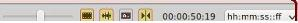 Las zonas inferiores del menú sirven para mostrar algún frame que idenfique el video en la línea del tiempo y las funciones de zoom. en la zona inferior derecha de la pantalla principal se muestran estas últimas funciones con sus correspondientes iconos.
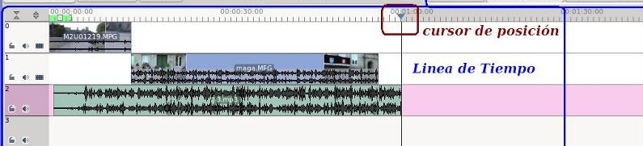
- La última sección del menú se refiere a los zooms y a la visualización en la línea de tiempo. En la zona inferior disponemos de los mismos iconos y funciones.
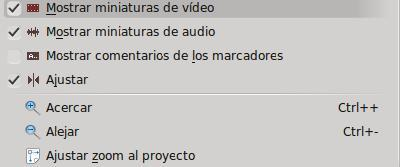
-
- Nos permite mostrar o no las miniaturas del video (algún frame del video) en la línea de tiempo. Observa la pista 0 al desactivar dicha opción. En la imagen hemos desactivado el sonido y activado las guías o mostrar comentarios de los marcadores.
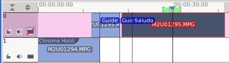-
La opción Ajustar zoom al proyecto nos permite un zoom total de nuestro proyecto. Es muy válido cuando hemos utilizado un zoom muy detallado y deseamos ver todo nuestro proyecto completo en la ventana del programa.
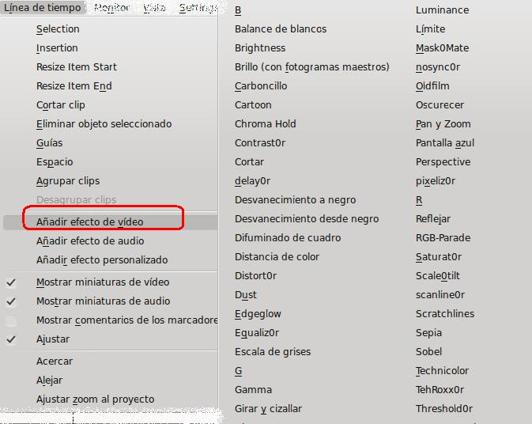
Despliegue del menú en otras distribucciones
Las opciones de añadir efectos de Audio y Video serán tratadas detalladamente en otros apartados de este curso.
Jo.R.C.A. 2004 - 2011

Edición de Audio y Video con Software Libre by José Ramón Cerdeira Alonso is licensed under a Creative Commons Reconocimiento-No comercial-Compartir bajo la misma licencia 3.0 España License